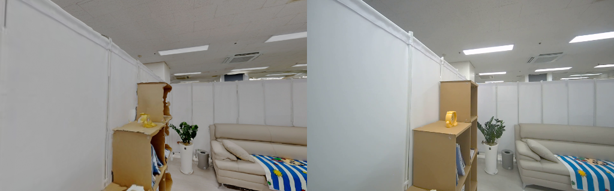

서로 다른 센서 데이터를
연구팀이 바로 쓰는 형태로
VFM 연구에 쓸 3D 공간 데이터를 Matterport, LiDAR, 스테레오 카메라, IMU로 수집하고, 누락 검증과 좌표 정합, 점군 라벨링, 업로드까지 맡아 연구개발 팀에 전달했습니다.
SLAM과 재구성 연산은 외부 도구가 수행. ICP 알고리즘 자체를 개발한 것은 아닙니다.
수집 검증
수집 직후 필수 ROS 토픽의 메시지 수를 확인하고, 기준에 못 미치면 알림
좌표 정합
기준 스캔과 LiDAR 맵을 정합하고 점군과 카메라 시점을 비교
라벨링과 업로드
실내 장면 점군을 직접 라벨링하고, 라벨링 플랫폼 업로드와 라벨 변환을 도구화
전달
정합 점군, 변환 행렬, RGB, 카메라 파라미터를 표준 구조로 정리해 전달
수집부터 전달까지
막히던 곳
센서가 여러 개이고 데이터가 커서, 문제를 늦게 발견하거나 같은 일을 반복하는 지점이 많았습니다.
현장에서 확인하고,
좌표를 맞춰 넘긴다
- 수집 검증: 수집 직후 필수 ROS 토픽의 메시지 수를 자동으로 세고, 기준에 못 미치면 알림. 현장을 떠나기 전에 다시 수집할지 판단
- 좌표 정합: Matterport 기준 스캔과 LiDAR SLAM 맵을 Point-to-Plane ICP로 정합
- 정합 확인: 변환 행렬을 적용한 뒤 점군 렌더링과 카메라 RGB 시점을 비교하고, 기준 대비 오차로 사용 가능 여부를 판단
- 판단: SLAM 결과를 그대로 쓰지 않음. 궤적이 발산한 사례를 조사하고 이미지 기반 포즈로 정합 대안을 시도. 정합 품질이 낮은 결과에는 사용 주의를 기록
- 전달: 정합 점군, 변환 행렬, RGB, 카메라 파라미터를 표준 구조로 정리해 연구개발 팀이 바로 쓸 수 있게 함

점군 렌더링(왼쪽)과 카메라 RGB(오른쪽)를 같은 시점에서 비교해 정합 확인
직접 라벨링하며
반복 작업을 도구로
실내 장면 점군 라벨링을 직접 하면서, 업로드와 라벨 내려받기를 명령 하나로 묶었습니다.
- ID 매핑과 중복 확인: 상위 폴더 이름을 장면 ID로 데이터셋 설명에 기록하고, 같은 ID의 데이터셋과 샘플이 있으면 건너뜀
- 라벨 설정 자동 적용: 새 데이터셋에 기존에 쓰던 클래스 이름과 색상을 공용 설정 파일에서 그대로 적용
- 자세 값 입력: API로 올릴 때 필요한 자세와 높이 값을 API 문서에 맞춰 기본값으로 채움
- 병렬 처리: 스레드 풀로 업로드를 동시에 진행
- 라벨 변환: 업로드한 점군을 그대로 다시 받아 점 순서와 점별 라벨을 맞추고, 서버의 클래스 색으로 저장해 시각화로 확인
search_tag = f"[Origin: {unique_id}]"
target = next((ds for ds in existing_datasets
if search_tag in (ds.description or "")), None)
if target:
samples = client.get_samples(target.full_name)
if any(s.name == file_path.name for s in samples):
return {"name": project_name, "skipped": True}
else:
dataset = client.add_dataset(
name=project_name,
description=f"{search_tag} ...",
task_type="pointcloud-segmentation",
task_attributes=get_default_pcd_attributes(), # shared classes, colors
)
attributes = {
"pcd": {"url": pcd_url, "type": "pcd"},
"ego_pose": {"position": {"x": 0, "y": 0, "z": 0},
"heading": {"qx": 0, "qy": 0, "qz": 0, "qw": 1}},
"default_z": -1,
}
client.add_sample(dataset_id, file_path.name, attributes)우회 구조를 만들고,
필요 없어지자 걷어냈다
API가 데이터셋 목록을 100개까지만 돌려주던 시기에는 우회 구조로 조회를 유지했습니다. 이후 전체 페이지를 순서대로 읽을 수 있게 되자 우회 구조를 폐기하고 단순한 페이지 순회로 바꿨습니다.
2026.04 · 우회
목록 밖으로 밀려날 오래된 데이터셋을 미리 골라 보조 계정에 조회 권한을 붙였습니다. 동작은 했지만 계정과 권한이 계속 늘어나는 구조였습니다.
2026.10 · 단순화
권한을 건드리지 않고 모든 페이지를 읽도록 교체했습니다. 같은 페이지가 반복되면 불완전한 목록으로 진행하지 않고 멈춥니다.
def get_all_datasets(client):
datasets, seen, page = [], set(), 1
while True:
try:
batch = client.get_datasets(per_page=100, page=page)
except NotFoundError:
if page == 1:
raise
break # past the last page
fresh = [d for d in batch if d.full_name not in seen]
if batch and not fresh:
raise ConfigError("repeated page: refusing an incomplete list")
if not batch:
break
datasets += fresh
seen.update(d.full_name for d in fresh)
page += 1
return datasets연구팀이 바로 쓰는
데이터로 전달
수집 직후 누락 확인과 반복 업로드를 도구로 만들고, 정합한 데이터를 같은 구조로 연구개발 팀에 넘겼습니다.
| 구분 | 내용 |
|---|---|
| 결과 | 정합된 점군, 변환 행렬, RGB를 표준 구조로 정리해 연구개발 팀에 전달 |
| 결과 | 수집 직후 누락 확인과 반복 업로드를 도구화 |
| 결과 | 중복 업로드 자동 차단, 라벨 설정 자동 적용, 점 순서를 유지한 라벨 변환 |
| 결과 | 데이터셋 목록 우회 구조를 폐기하고 전체 페이지 순회로 교체 |
| 준비 | 장면별 클래스 구성 분석 기능을 학습 데이터 선별용 확장 기능으로 마련 |